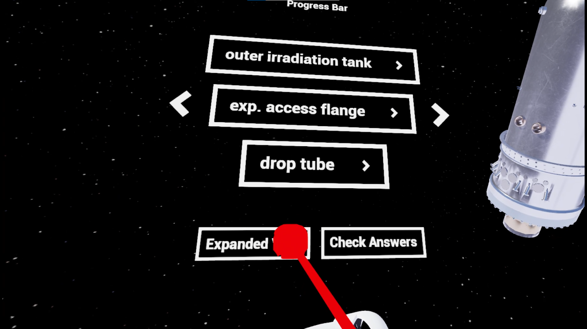
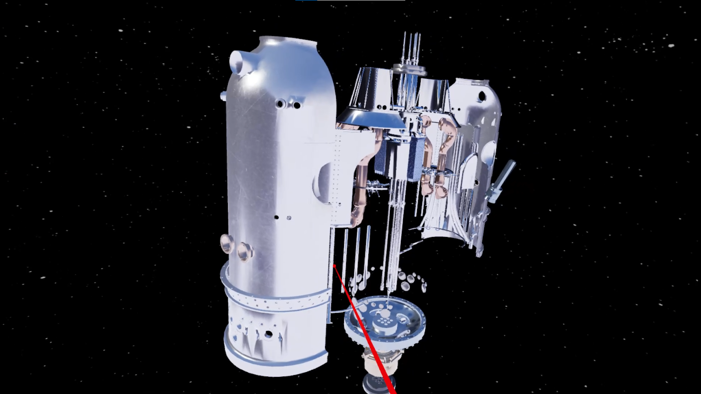
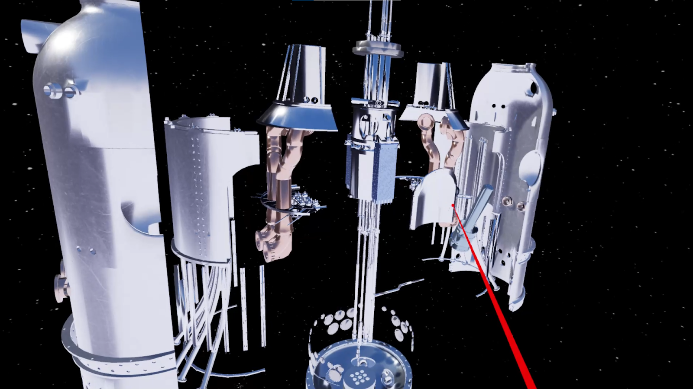
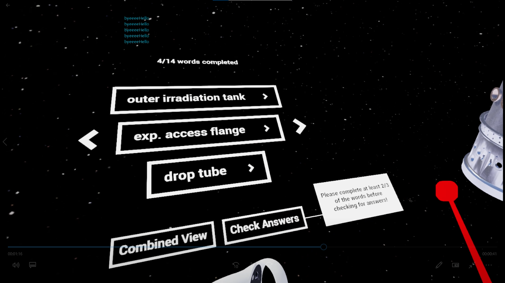
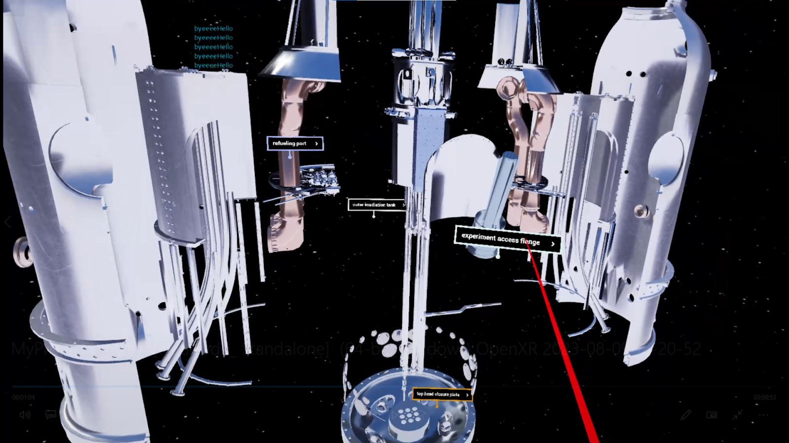
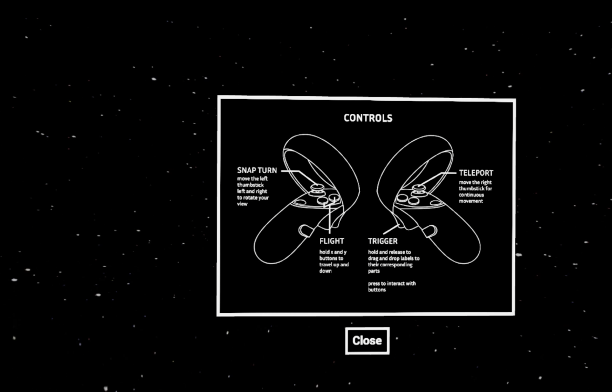
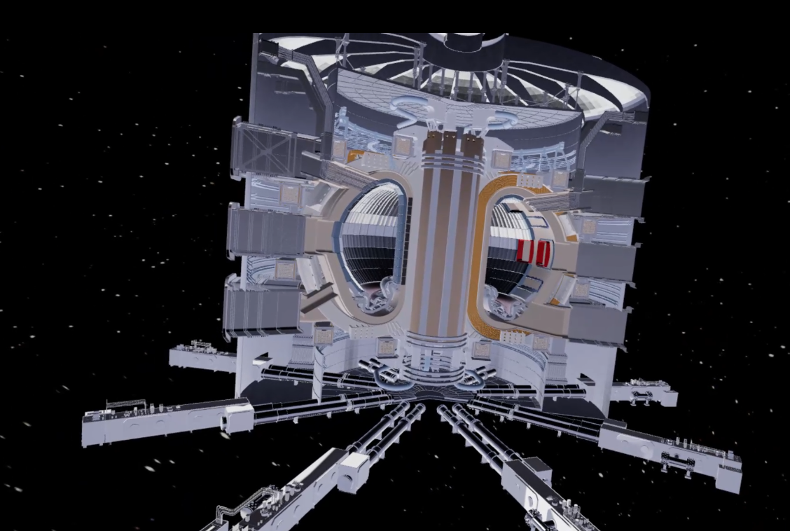
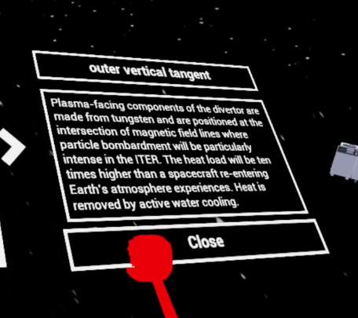

Over the summer, I worked on building a labelling system in VR as educational content for students in
the new introductory nuclear engineering course. Students in Engineering 100 would be engaging with VR
models of nuclear reactors in order to better understand how they are designed and to be able to
discuss how these reactors function with members of the general public when performing community outreach.
Tasks:
- Imported and optimized the existing Idaho National Laboratory fission reactor model and the Iter Tokamak fusion reactor model for VR
- Textured models
- Implemented labelling system including descriptions and a checking system
- Animated the fission reactor model to an exploded view for more convenient labelling
- Communicated with nuclear engineering instructors to help improve details of the labelling system
- Explored procedural building generation using Blender and Houdini FX to build contextual environments







